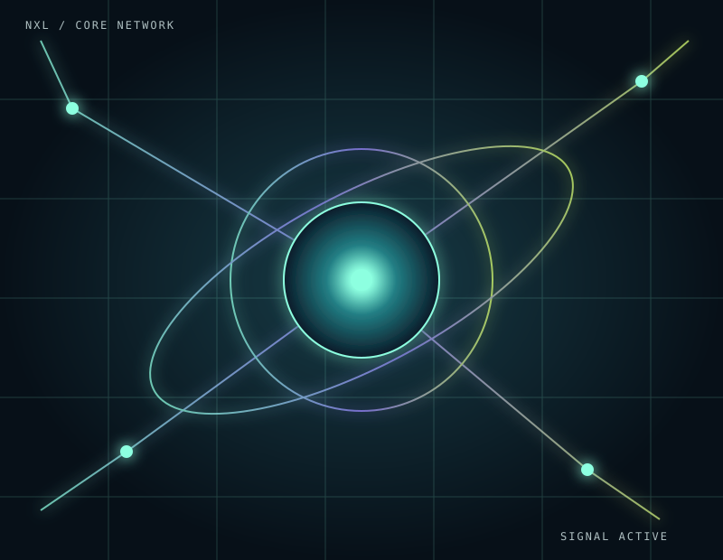
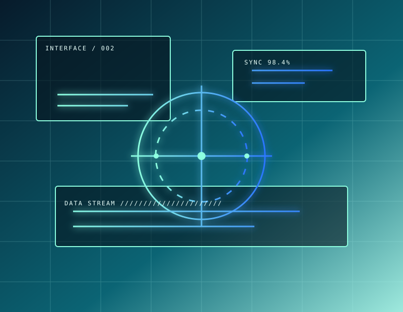
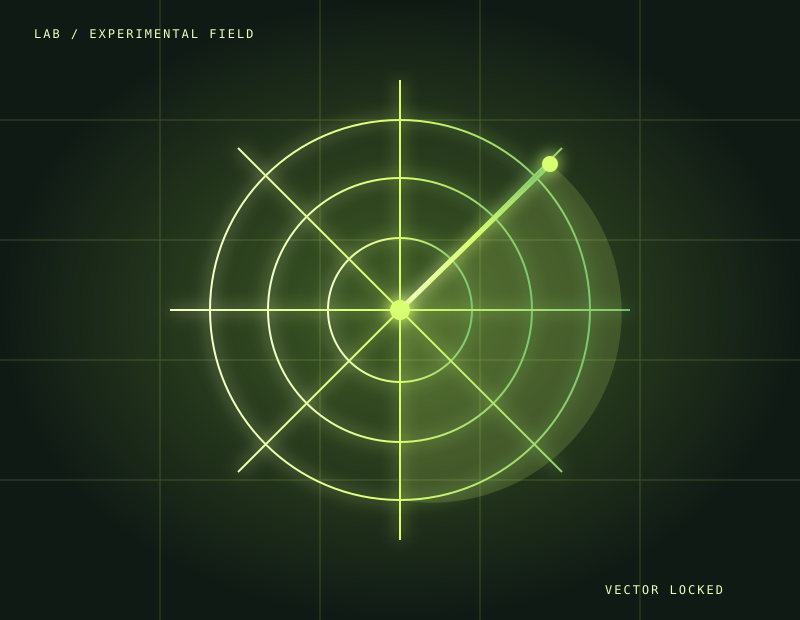

EM BREVENXL / 01ESTRATÉGIA DIGITAL
Core / Produto com presença
Arquitetura de marca e experiência para transformar uma visão complexa em uma jornada impossível de ignorar.
Levar uma ideia adiante↗ESTÚDIO DIGITAL INDEPENDENTE
Criamos produtos digitais, interfaces e experiências que transformam ideias ambiciosas em algo real, desejável e pronto para crescer.
01A NOSSA FREQUÊNCIA
Na Nexulvi, estratégia, design e engenharia trabalham no mesmo circuito. Descobrimos o que importa, desenhamos a experiência e construímos a tecnologia para que a sua ideia não apenas funcione: ela seja lembrada.
02SISTEMAS EM ÓRBITA
Da primeira hipótese ao produto que ganha escala: experiências digitais com clareza, personalidade e tecnologia de verdade.

EM BREVENXL / 01ESTRATÉGIA DIGITAL
Arquitetura de marca e experiência para transformar uma visão complexa em uma jornada impossível de ignorar.
Levar uma ideia adiante↗
EM BREVENXL / 02PRODUTO DIGITAL
Fluxos, telas e interações que fazem tecnologia avançada parecer natural desde o primeiro toque.
Abrir conversa↗
LAB ONLINENXL / ∞LABORATÓRIO
Protótipos e experimentos para descobrir o que a tecnologia pode fazer antes que vire tendência.
Entrar no laboratório↗03SINAL NEXULVI
Encontramos a frequência certa entre a ousadia de uma ideia e a precisão necessária para colocá-la no mundo.
04ABRA UM CANAL
Tem um produto para tirar do papel, uma experiência para reinventar ou uma marca pronta para subir de nível? Vamos construir o próximo sinal.
Transmitir meu projeto